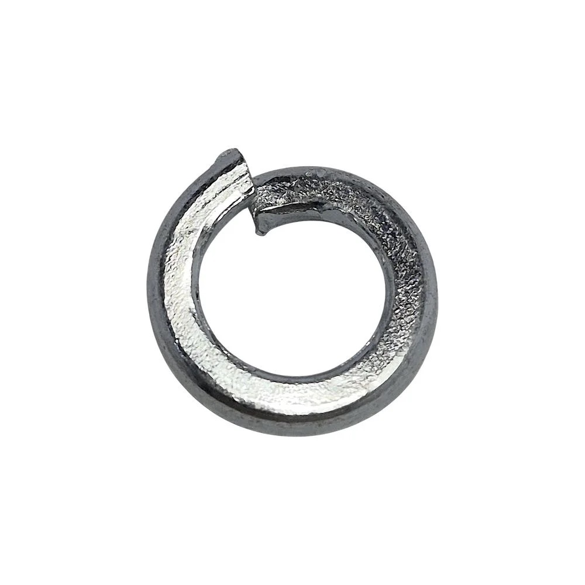

Шайба гровер (пружинная) ГОСТ 6402-70
Пружинная шайба (гровер) по ГОСТ 6402-70 для болтов, винтов и шпилек. За счёт разреза и упругости препятствует самоотвинчиванию резьбовых соединений. Применяется в машиностроении, строительстве и других отраслях промышленности.
